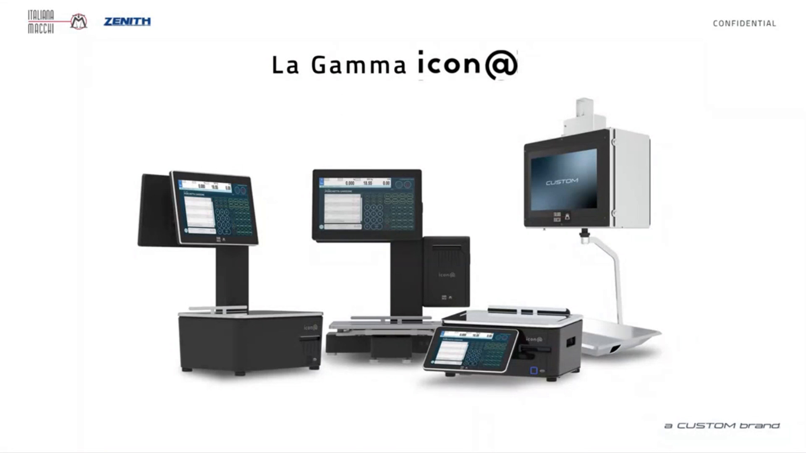
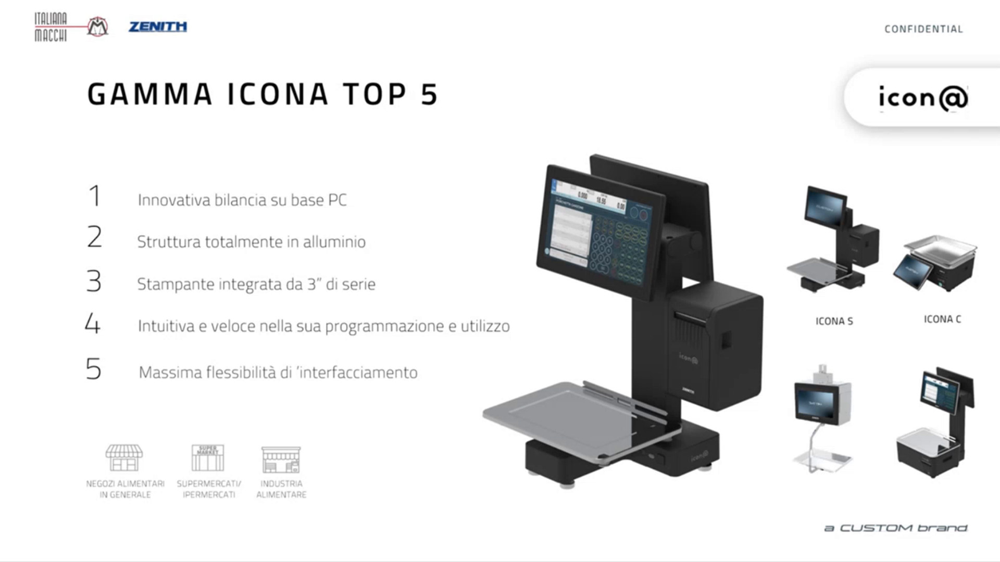
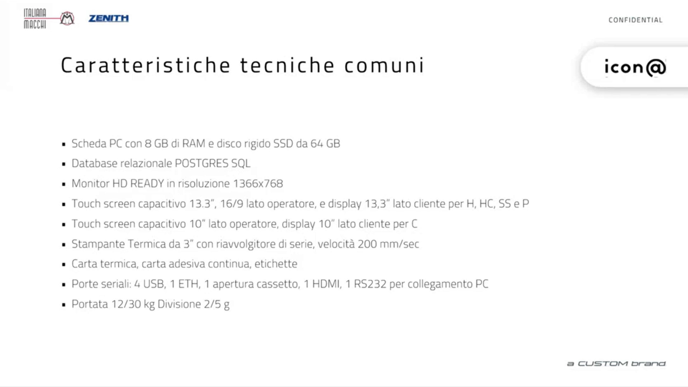
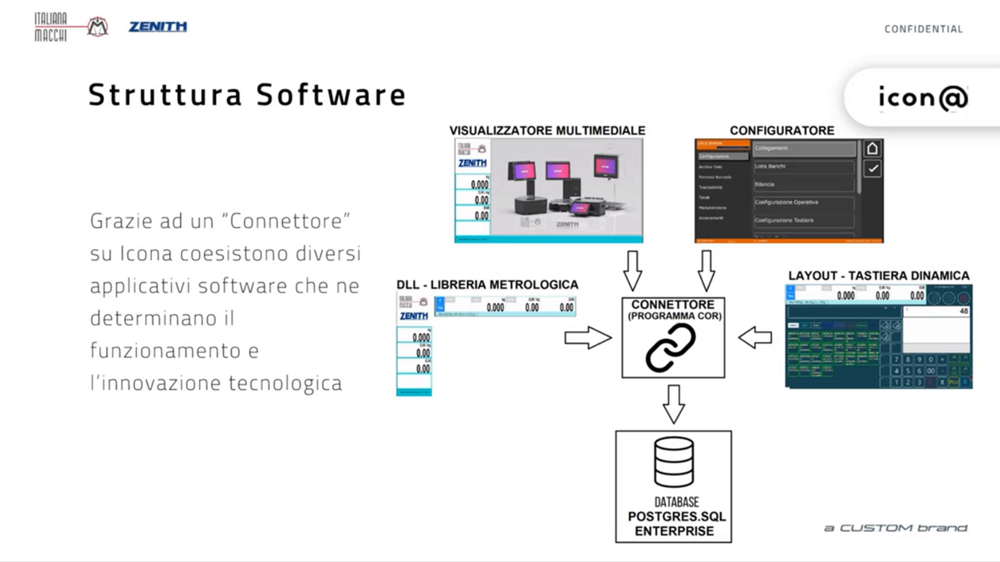
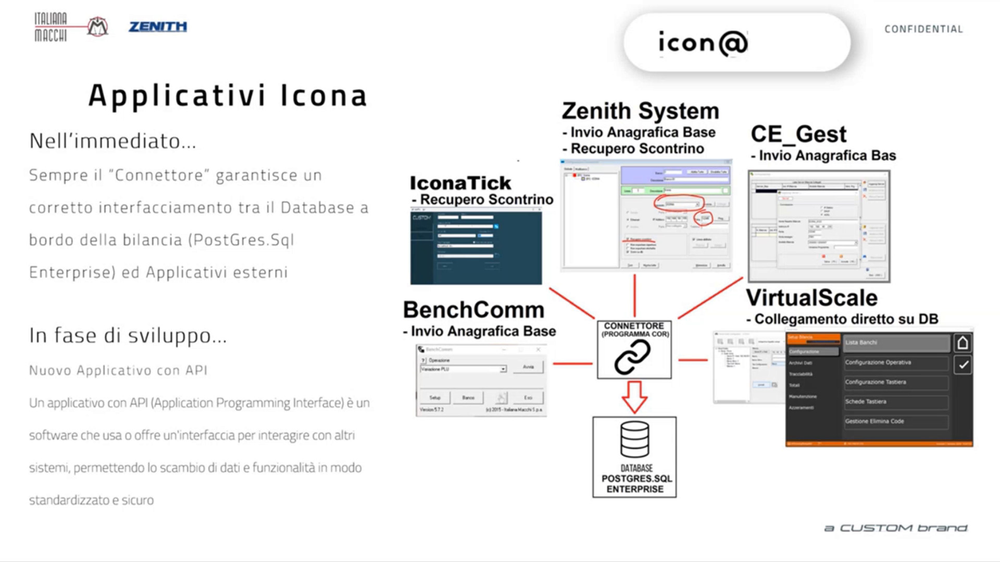
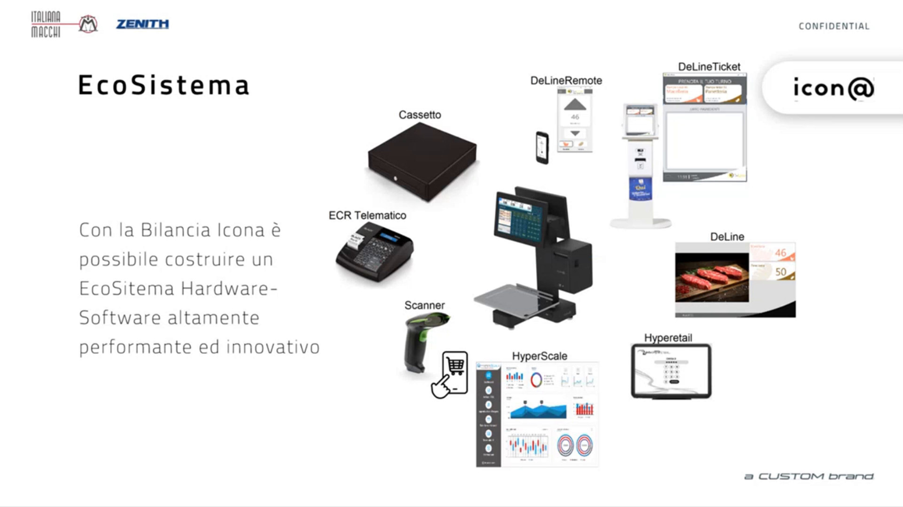

Conoscere Icona: gamma, architettura e applicativi
Target: tecnico installatore / rivenditore. Prima di programmare la bilancia conviene sapere come è fatta, che cosa contiene e con che cosa può dialogare: questa pagina riassume le informazioni che servono per orientarsi nelle pagine di configurazione.
In breve
Icona è una bilancia peso-prezzo su base PC Windows, con struttura in alluminio pressofuso, stampante termica integrata da 3" e un database PostgreSQL a bordo. È pensata per negozi alimentari in genere, supermercati e ipermercati, industria alimentare. Funziona sia come bilancia singola sia in rete di bilance.

Cinque punti di forza
- Innovativa bilancia su base PC
- Struttura totalmente in alluminio
- Stampante integrata da 3" di serie
- Intuitiva e veloce nella programmazione e nell'utilizzo
- Massima flessibilità di interfacciamento

La gamma
| Modello | Caratteristiche |
|---|---|
| Icona H | Versione alta con la stampante nella parte alta, per banchi di vendita assistita (gastronomia, macelleria e simili). Due schermi touch |
| Icona HC | Versione alta con la stampante nel basamento |
| Icona C | Versione bassa, anche per etichettatura |
| Icona Pensile | L'ultima arrivata, a completamento della gamma |
Tutta la famiglia usa un unico software e un unico configuratore: i passaggi di programmazione sono gli stessi qualunque sia il modello.
- Modalità Self Service con un solo monitor. I modelli H, HC e C possono essere richiesti anche in modalità Self Service, quindi con un solo display. La modalità Self Service si può attivare anche su una bilancia a due monitor.
- Due schermi touch. Anche lo schermo lato cliente, destinato ai contenuti multimediali, è touch: i due schermi sono intercambiabili. Questo dà la massima flessibilità nelle versioni H.
- Struttura robusta. Le bilance sono in alluminio pressofuso.
Caratteristiche tecniche comuni

| Voce | Specifica |
|---|---|
| Scheda PC | 8 GB di RAM, disco SSD da 64 GB |
| Database | Relazionale PostgreSQL |
| Monitor | HD Ready, risoluzione 1366x768 |
| Touch screen capacitivo, modelli H, HC, SS e P | 13,3" lato operatore (16/9), display 13,3" lato cliente |
| Touch screen capacitivo, modello C | 10" lato operatore, display 10" lato cliente |
| Stampante | Termica da 3", riavvolgitore di serie, velocità 200 mm/sec |
| Supporti di stampa | Carta termica, carta adesiva continua, etichette |
| Porte | 4 USB, 1 ETH, 1 apertura cassetto, 1 HDMI, 1 RS232 per collegamento PC |
| Portata | 12/30 kg, divisione 2/5 g |
Architettura software
Un programma Connettore (programma core) fa da filtro sul database PostgreSQL della bilancia e permette ai vari programmi di coesistere e dialogare tra loro.

| Componente | Funzione |
|---|---|
| Configuratore | È a bordo della bilancia. Permette di impostare e accedere a tutte le tabelle del database, anche senza programmi esterni per l'anagrafica degli articoli. È il programma descritto nelle pagine di configurazione di questo manuale |
| Layout - Tastiera dinamica | La schermata di vendita. Esistono diversi tipi di tastiera già pronti, con possibilità di piccole personalizzazioni |
| Visualizzatore multimediale | Gestisce il display esterno (lato cliente): immagini e video ad alta risoluzione, anche in 4K |
| DLL - Libreria metrologica | È l'unica parte sotto vincolo metrologico. Consente di aggiornare la bilancia ripetutamente nel tempo senza dover rientrare in omologa |
| Database PostgreSQL | Contiene tutti gli archivi. Può risiedere su una bilancia o su un'altra, e anche su un server esterno |
Reti di bilance
Poiché il database può risiedere su una bilancia, su un'altra o su un server esterno, si possono costruire reti di bilance. Ogni bilancia o PC con VirtualScale è solo un punto di accesso al database. Vedi Collegamenti per l'indirizzo IP e la scelta del database.
Applicativi collegati
Tutti dialogano con la bilancia tramite il Connettore e popolano le informazioni del database.

| Applicativo | Funzione |
|---|---|
| VirtualScale | Collegamento diretto al database. È il configuratore utilizzato su PC: diventa un punto di accesso al database della bilancia, dal quale fare le stesse configurazioni e programmazioni |
| CE_Gest | Invio dell'anagrafica base. Il collegamento è unidirezionale: si può solo inviare. Serve, per esempio, a inviare un'anagrafica articoli ripresa da una bilancia della serie 9000 per fare l'upgrade al cliente |
| Zenith System | Invio dell'anagrafica base e recupero dello scontrino. È un driver usato anche da applicativi esterni che si connettono alla bilancia |
| BenchComm | Invio dell'anagrafica base alla bilancia, nella modalità del collegamento Italiana Macchi |
| IconaTick | Recupero dello scontrino. Insieme a BenchComm permette a Icona di essere compatibile con sistemi in cui le bilance sono collegate tramite CE_Gest e BenchComm: Icona si può aggiungere come banco |
Limite di Zenith System e CE_Gest
Con questi due programmi non è possibile recuperare le anagrafiche presenti nella bilancia: si possono solo inviare.
In sviluppo: applicativo con API
È in sviluppo un nuovo applicativo basato su API (Application Programming Interface), cioè un software che usa o offre un'interfaccia per interagire con altri sistemi, permettendo lo scambio di dati e funzionalità in modo standardizzato e sicuro. Sarà usato da Custom per il nuovo frontend di configurazione della bilancia e verrà messo a disposizione delle software house per gestire e collegare la bilancia a 360 gradi.
Ecosistema
Intorno alla bilancia si può costruire un ecosistema hardware-software integrato.

- Hardware collegabile: cassetto, registratore di cassa o stampante fiscale (ECR telematico), scanner. Così la bilancia diventa un piccolo gestionale: si possono vendere prodotti con EAN e chiudere lo scontrino direttamente sulla cassa.
- Software Custom: Hyperetail e HyperScale (in arrivo), un gestionale dedicato alla gestione della bilancia, utilizzabile su hardware Windows e Android.
- DeLine, DeLineTicket, DeLineRemote: gestione dei contenuti pubblicitari, delle code e dei ticket in un negozio di qualsiasi tipo, con totem personalizzabili in ambiente Windows e Android.
Aggiornare la bilancia
Aggiornamento all'ultima versione
Le prime bilance Icona sono arrivate sul mercato senza l'infrastruttura dell'etichettatura evoluta. Chi ha già un'installazione può ottenere tutte le funzioni di etichettatura descritte in questo manuale (box ingredienti, tabelle testi, tracciabilità, tabelle nutrizionali, lotti di produzione) aggiornando la bilancia all'ultima versione.
Come proseguire
Segui l'ordine delle pagine di configurazione: prima i banchi, poi le impostazioni della bilancia, gli archivi, la tastiera e infine formati di stampa, tracciabilità e promozioni. La pagina iniziale riporta il percorso completo.